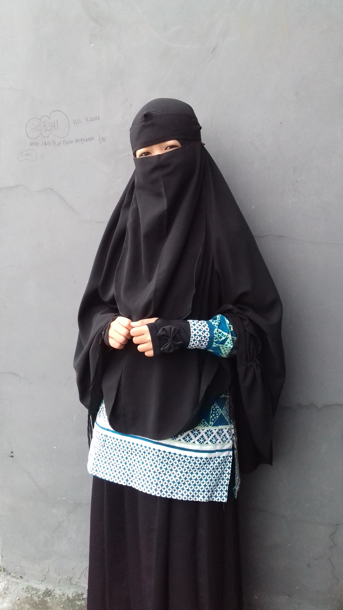

Syifa awalul fitriah
facebook
instagram
twitter
cintai kehidupan raih kemuliaan
Nama panggilan : Syifa
Ttl : Sukabumi,21 Desember 2000
Sekolah : SMK Islam Teknologi Al-Fath
Jurusan : Rekayasa Perangkat lunak
Umur : 17 tahun
Hobby : -
Cita-cita : Guru Tahfidz dan Tahsin Qur'an
Baca selengkapnya>
jangan merasa sendiri karena ada allah ^_^